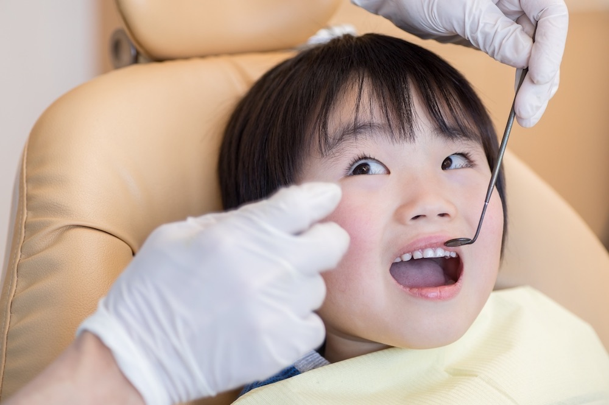
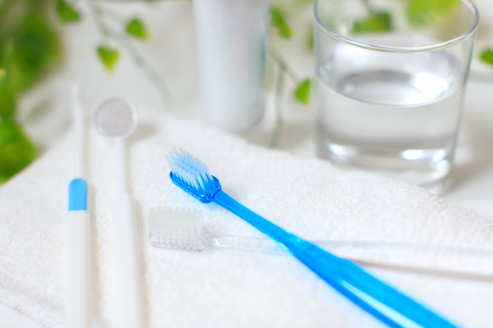

診療案内
一般歯科
 歯の治療に対して多くの方は不安を感じていらっしゃると思います。少しでも不安を取り除区ために患者様との会話を大切にしています。患者様と向き合い、安心して気持ちよく治療を受けていただけるよう笑顔で接するように心がけています。なるべく「削らない・抜かない」方針のもと治療に取り組みます。保険治療全般・自費診療についても遠慮なくご相談ください。
歯の治療に対して多くの方は不安を感じていらっしゃると思います。少しでも不安を取り除区ために患者様との会話を大切にしています。患者様と向き合い、安心して気持ちよく治療を受けていただけるよう笑顔で接するように心がけています。なるべく「削らない・抜かない」方針のもと治療に取り組みます。保険治療全般・自費診療についても遠慮なくご相談ください。
小児歯科
子供の歯は非常にデリケートです。乳歯のうちから強い歯を育て、健康な永久歯の準備をしましょう。歯を守ることが健やかな成長につながります。定期的な検診と正しいはのケアを身につけられる『楽しい場所』を提供したいと考えています。
予防・定期検診
予防・検診で出来るのは健康な歯を維持することだけではありません。経済的なメリットもたくさん！
院長とベテラン衛生士がしっかり・丁寧に対応します。
来院が難しい方への訪問診療も行っております。